01
01
Organic Production & Climate-Smart Agriculture
Training farmers in diversified cropping, soil regeneration and water-efficient farming to build resilient livelihoods.
Learn moreSince 2015 Tooro Organic Producers Association · Uganda
A farmer-led movement in Western Uganda growing premium organic raw materials, essential oils and nutrition products, and connecting rural families to high-value markets.
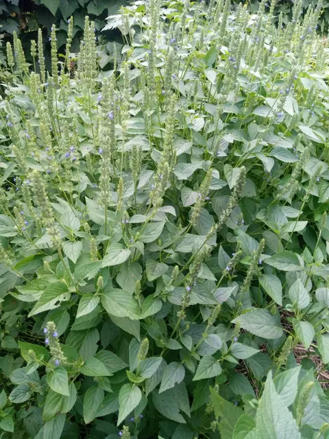
Who we are
Founded in 2015 and incorporated in 2022, TOPA is based in Fort Portal, Western Uganda, and serves East Africa through organic production, climate-smart farming and local processing.
We tackle three challenges that hold rural communities back:
What we’re doing
01
Training farmers in diversified cropping, soil regeneration and water-efficient farming to build resilient livelihoods.
Learn moreAgronomy, post-harvest handling, organic certification, entrepreneurship and market-led production.
Learn more 03
03
Our processing arm turns chia, castor, rosemary and mint into oils, seeds and herbal products.
Learn more 04
04
Organic nutrition products and herbal remedies that support household nutrition and immune health.
Learn more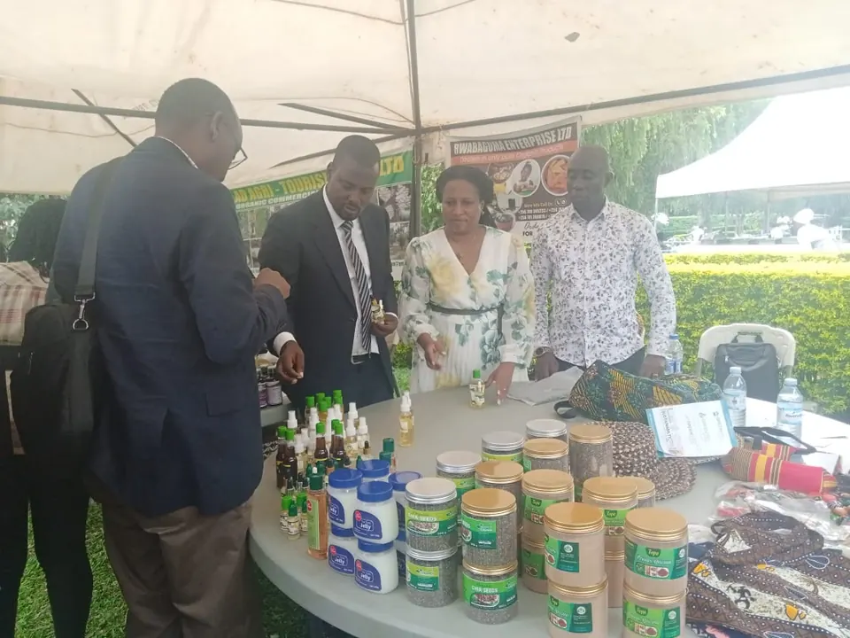
05Linking farmers with domestic distributors and buyers in Europe, the Americas and the Middle East.
Learn more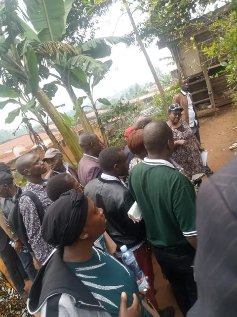
06Co-creating knowledge with farmers, researchers and partners through demonstration and field learning.
Learn moreFlagship initiative
A new programme in the Rwenzori region that puts omega-3-rich chia at the centre of farmer incomes and children’s cognitive development.
Healthy products


Superfood nutrition: rich in omega-3, high in fibre and the heart of our Chia for Brain Capital initiative.


Finely milled moringa leaf, packed in Fort Portal, for natural nourishment and everyday nutrition.


Whole black seed (Nigella sativa), a traditional wellness staple for adults and children.
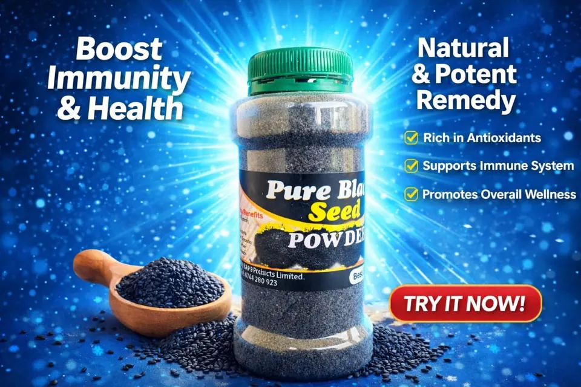
A natural remedy rich in antioxidants that supports the immune system and overall wellness.

Dried, finely ground okra: a versatile, fibre-rich addition to soups, sauces and smoothies.
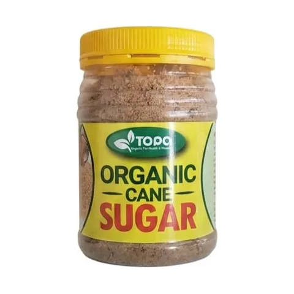
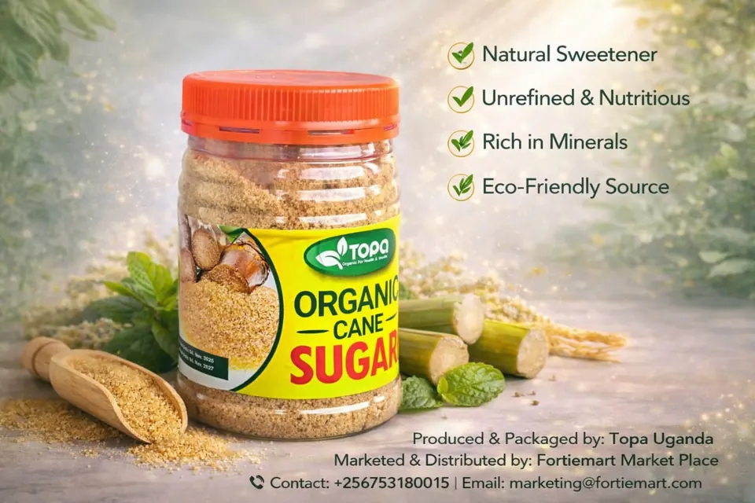
A natural, unrefined sweetener that keeps its minerals and comes from an eco-friendly source.
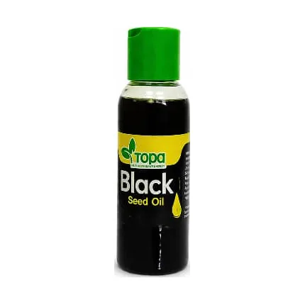
Black seed oil, bottled by TOPA for daily wellness and natural care.
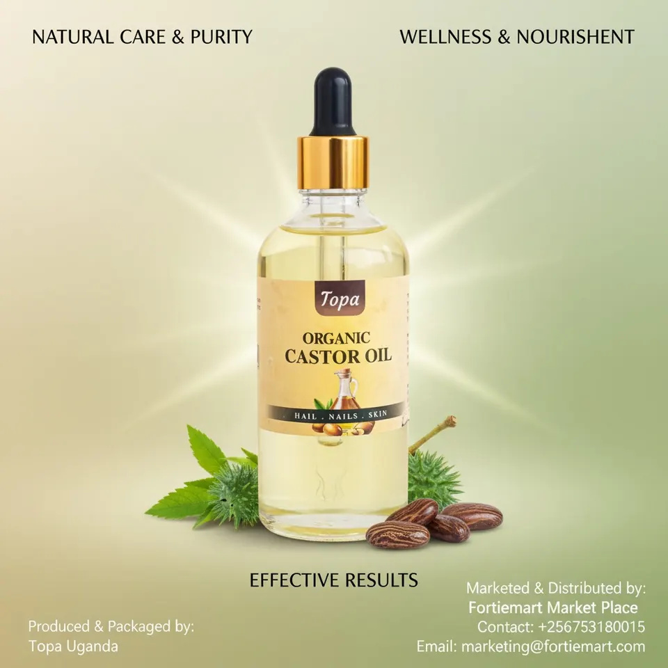
Pressed from farmer-grown castor seed. Natural care and purity for wellness and nourishment.
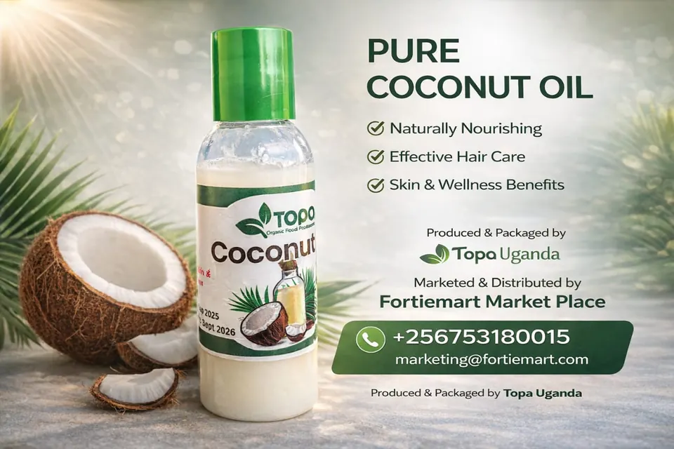
Naturally nourishing, effective for hair care, with skin and wellness benefits.

Pure eucalyptus essential oil for natural care, purity and wellness.

Aromatic clove oil, packaged by TOPA for natural care and nourishment.

Aromatic whole cloves for cooking, teas and home remedies.

Natural bee propolis extract in a dropper bottle. Take a few drops in warm water, as directed on the label.
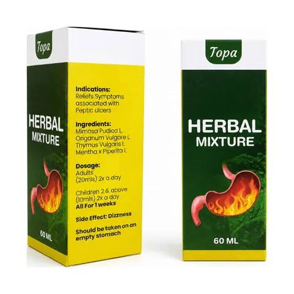
A traditional blend of Mimosa pudica, oregano, thyme and peppermint for digestive comfort. Follow the label dosage.
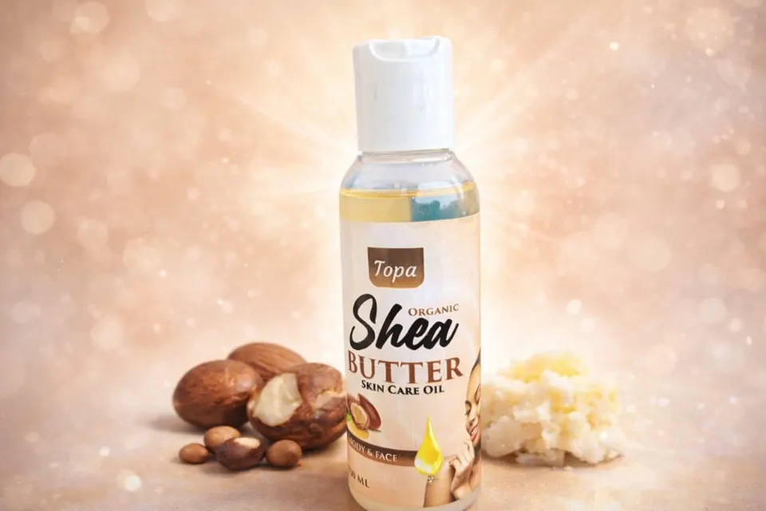
Rich, natural shea butter care oil for soft, nourished skin.
In the field


Working together with
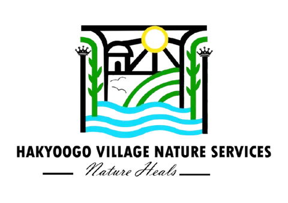
Hakyoogo Village Nature Services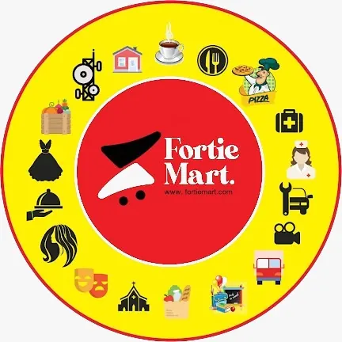
Fortiemart Market Place
Farmers, investors, donors, researchers and buyers: there is a place for you in Uganda’s organic transformation, including our new Chia for Brain Capital initiative.